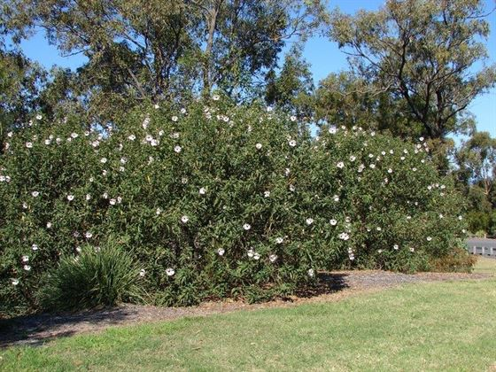

erbs generally refers to the leafy green or flowering parts of a plant (either fresh or dried), while spices are usually dried and produced from other parts of the plant, including seeds, bark, roots and fruits.

Shrubs are any sort of woody, perpetual, thick plants that branch into a few stems or trunks at the base and is littler than a tree. Shrubs are easy to spot, they are generally short and bushy and one does not see a significant part of the stem. Shrubs are otherwise called bushes
rees reduce the 'Greenhouse' effect by removing carbon dioxide from the air and releasing oxygen. Each year a mature tree produces enough oxygen for 10 people. Trees are also an effective sound barrier and can limit noise pollution. Recent research shows that trees also help reduce the stress of modern life.

These types of plants use special structures called tendrils to climb. A few climbers' plant names include pea plant, grapevine, sweet gourd, money plant, jasmine, runner beans, green peas, etc.
.jfif)
Creepers, as the name suggests, are plants that creep on the ground. They have very fragile, long, thin stems that can neither stand erect nor support all their weight. Examples include watermelon, strawberry, pumpkin and sweet potatoes.
.jfif)
If you are interested to know about Trees